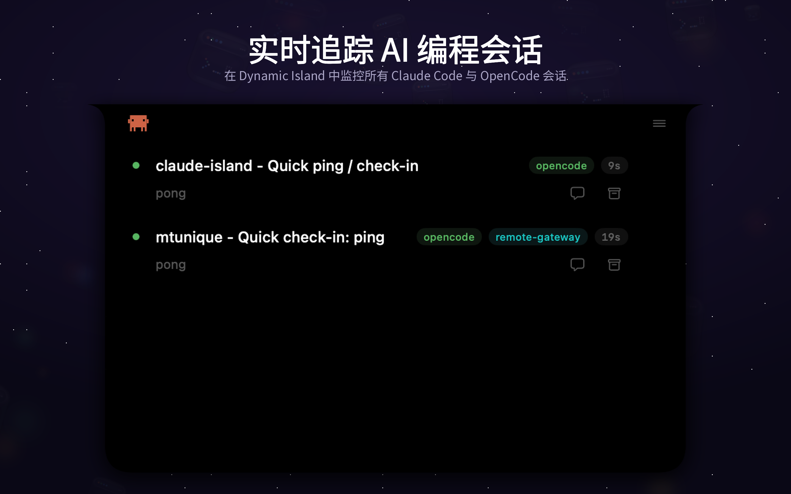
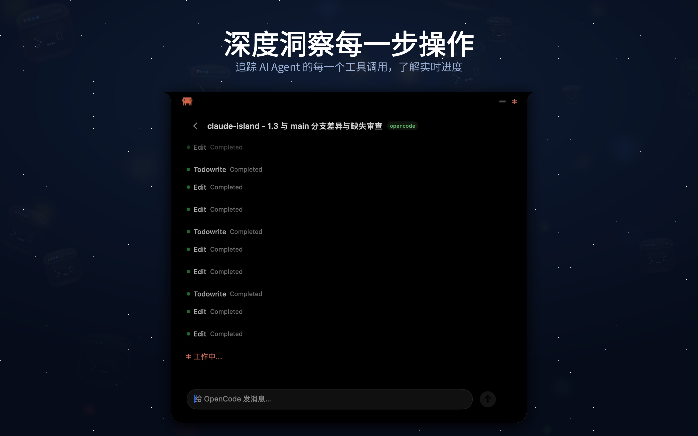
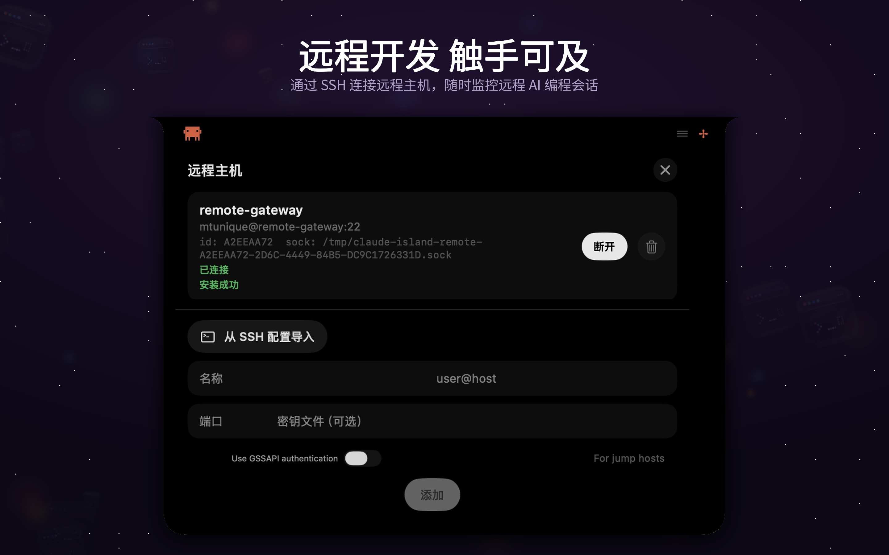
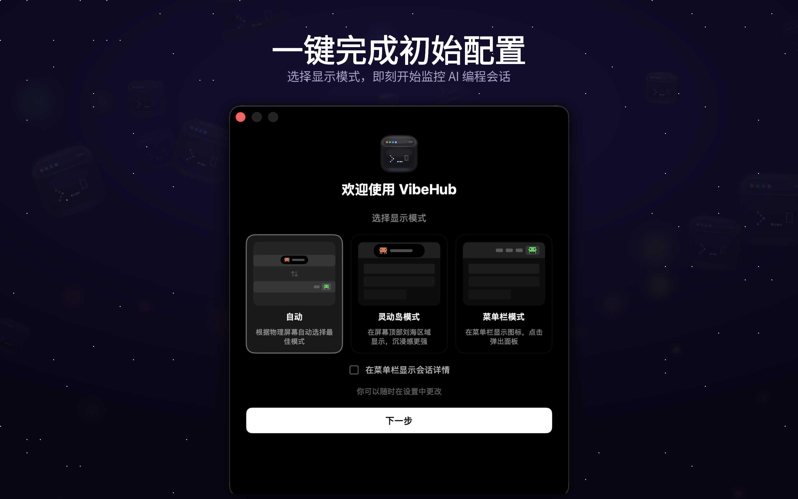

实时会话追踪
一眼掌握所有 Claude Code 和 OpenCode 会话——本地和远程，附带实时状态指示。

工具调用可视化
实时查看每一次工具调用——文件编辑、命令执行、MCP 工具——并可直接批准或拒绝。

菜单栏模式
没有刘海屏？用螃蟹动画图标在任何 Mac 上显示实时状态。

远程 SSH 监控
添加远程服务器并通过 SSH 监控 AI 会话——点击眼睛图标自动切换到对应终端标签。

引导式配置
首次启动选择显示模式。自动模式根据屏幕类型选择灵动岛或菜单栏。

灵活配置
显示模式、通知提示音、多显示器支持、远程主机管理。